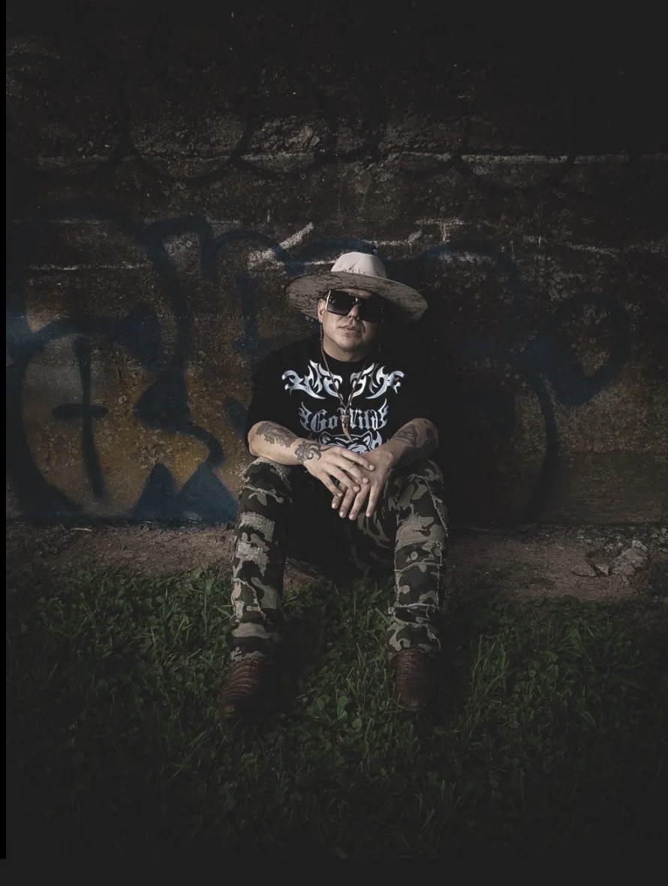

Meet Romeo Vaughn
Army Veteran Romeo Vaughn hails from the Rio Grande Valley in South Texas. His hometown Santa Rosa, Texas is where it all began for him. Growing up in a Mexican-American family. Vaughn says his family is the core of his music. Romeo's songs are personal, raw, and shows who he is and where he comes from through every note and bar.
Latest Releases
A smooth small-town country vibe about chasing love and following your instincts when emotions feel real.
A heartfelt country song about chasing success while staying connected to your roots.
A laid-back country track about staying true to yourself, enjoying small-town life, and living with confidence no matter what others think.
On the Road
Catch Romeo live this summer at venues across the South and Midwest.
- May 20 — Nashville, TN
- June 8 — Austin, TX
- July 14 — Oklahoma City, OK
- August 2 — Kansas City, MO
Small Town Roots



Book Romeo
For booking, interviews, and press, reach out to the team below.
Email
romeovaughn@countrymail.com
Phone
(555) 123-4567